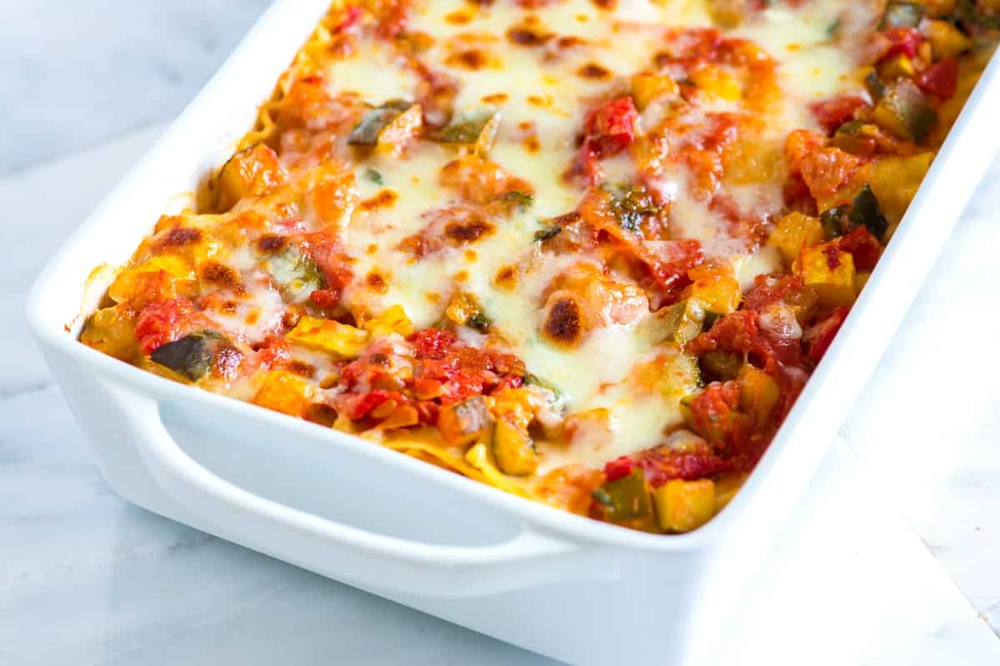

Lasagna Recipe 2

How to Make Lasagna
It's easy, it's cheesy, and it's vegetarian!
Ingredients
- cooking spray
- 9 lasagna noodles
- egg, lightly beaten
- cup pasta sauce
- 1 bunch fresh spinach
- 1 pinch dried basil
- ½ cup shredded mozzarella cheese
- ¼ cup grated Parmesan cheese
Steps
- Preheat oven to 400 degrees F (200 degrees C). Spray a 1 1/2-quart casserole dish with cooking spray.
- Bake in the preheated oven for 25 minutes. Uncover casserole and continue baking until lasagna is bubbling and lightly browned, about 25 more minutes. Let lasagna stand 5 minutes before serving.